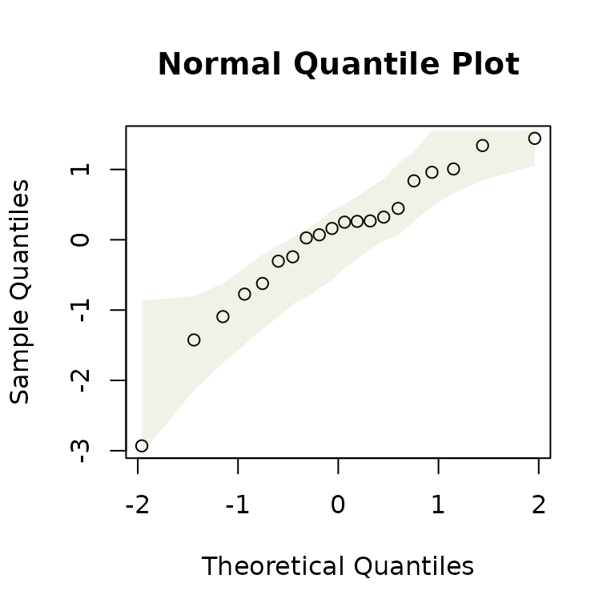

Eco-Stats -- Code and Data Accompanying the Eco-Stats Text
David Warton
2022-08-25
ecostats.RmdThe Eco-Stats package contains functions and data supporting the Eco-Stats text (Warton, 2022, Springer), and solutions to exercises. Functions include tools for using simulation envelopes in diagnostic plots, also applicable to multivariate linear models, and a parametric bootstrap function that can be used in place of an anova call for hypothesis testing via simulation, for many types of regression models. Datasets mentioned in the package are included here (where not available elsewhere) and vignettes work through code chunks and exercises from the textbook, one chapter at a time.
Simulation envelopes in plots
The command plotenvelope will take a fitted object and construct standard residual plots with global envelopes added around points (for quantile plots) and around smoothers (for residual plots), constructed via simulation. These are constructed using the GET package as global envelopes, which is important for interpretation – it means that when model assumptions are correct, 95% of quantile plot envelopes (at confidence level 95%) should contain the data (or smoother) over the whole plot. (Pointwise envelopes would have been easier to construct, but are much harder to interpret because they don’t control the chance of missing the data globally, across the whole plot. A 95% pointwise envelope, constructed when assumptions are satisfied, might for example miss some of the data 60% of the time.)
plotenvelope will work on lots of different types of fitted objects – pretty much anything that comes with a simulate function that behaves in a standard way. A simulate.mlm and simulate.manyglm functions have been written in this package specifically so that plotenvelope also works for multivariate models fitted using lm or mvabund::manyglm.
library(ecostats)
#> Loading required package: mvabund
data(iris)
Y = with(iris, cbind(Sepal.Length,Sepal.Width,Petal.Length,Petal.Width))
iris.mlm=lm(Y~Species,data=iris)
# check normality assumption:
par(mfrow=c(1,2),mar=c(3,3,1,1),mgp=c(1.75,0.75,0))
plotenvelope(iris.mlm,n.sim=199)For mlm objects, this function will compute conditional residuals and fitted values, that is, they are computed for each response conditional on all other responses being observed, via the cpredict and cresiduals functions. This is done because the full conditionals of a distribution are known to be diagnostic of joint distributions, hence any violation of the multivariate normality assumption will be expressed as a violation of assumptions of these full conditional models. The full conditionals are well-known to follow a linear model, as a function of all other responses as well as predictors.
The qqenvelope function can be applied for a normal quantile plot, with global envelope, to either a fitted model or a sample of data:
y=rnorm(20)
qqenvelope(y)
anova tests using a parametric bootstrap
The command anovaPB computes analysis of variance (or deviance) tables for two fitted model objects, but with the \({P}\)-value estimated using a parametric bootstrap – by repeatedly simulating new responses from the fitted model under the null hypothesis. This will work on lots of different types of fitted objects – like plotenvelope, it should work on pretty much anything that comes with a simulate function that behaves in a standard way. These fitted models also need to respond to either anova or logLik.
While the interface is written to be a lot like anova, it requires two fitted objects to be specified – the first being a fit under the null hypothesis, and the second being the fit under the alternative.
# generate random Poisson data and a predictor:
y = rpois(50,lambda=1)
x = 1:50
# fit a Poisson regressions with and without x:
rpois_glm = glm(y~x,family=poisson())
rpois_int = glm(y~1,family=poisson())
# use the parametric bootstrap to test for an effect of x (will usually be non-significant)
anovaPB(rpois_int,rpois_glm,n.sim=99)
#> Analysis of Deviance Table
#>
#> Model 1: y ~ 1
#> Model 2: y ~ x
#> Resid. Df Resid. Dev Df Deviance
#> 1 49 61.162
#> 2 48 60.972 1 0.19014 0.57Datasets
All datasets used in the Eco-Stats text, where not available elsewhere, are supplied in this package. For example:
data(aphids)
cols=c(rgb(1,0,0,alpha=0.5),rgb(0,0,1,alpha=0.5)) #transparent colours
with(aphids$oat, interaction.plot(Time,Plot,logcount,legend=FALSE,
col=cols[Treatment], lty=1, ylab="Counts [log(y+1) scale]",
xlab="Time (days since treatment)") )
legend("bottomleft",c("Excluded","Present"),col=cols,lty=1)